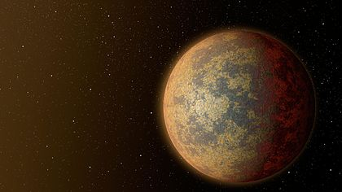

Utapau
Utapau était une planète lointaine du système Utapau dans les Territoires de la Bordure Extérieure. Criblée d'énormes trous et crevasses, elle était le monde d'origine des Pau'ans et des Utai. Quelques tribus Amani immigrèrent sur ce monde. Vers la fin de la Guerre des Clones, elle fut le théâtre d'une importante bataille au cours de laquelle le Général Grievous trouva la mort.

| Apparaît dans : | La Revanche des Sith |
|---|---|
| Environnement : | Gouffres, Grottes, Déserts |